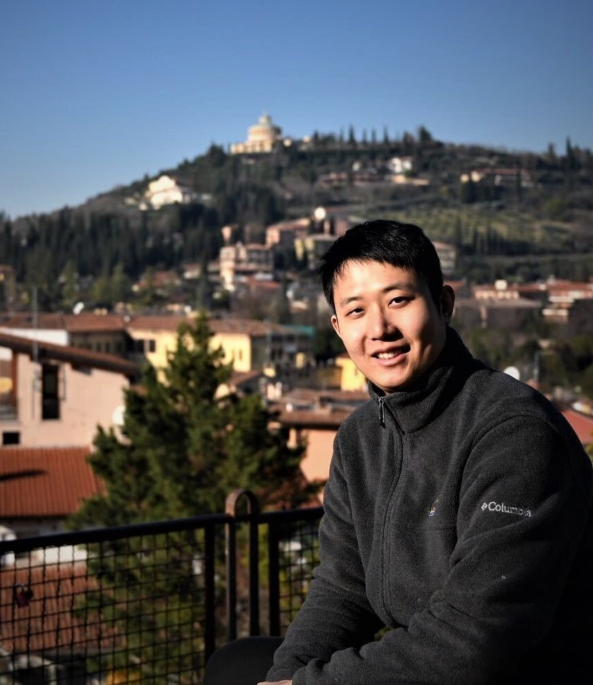

Dr. Jianfei Yang
Assistant Professor (Tenure-Track)
Director of Multimodal AI and RoboticS <MARS> Lab
School of Mechanical and Aerospace Engineering
School of Electrical and Electronic Engineering
Nanyang Technological University, Singapore
Office: N3-02b-59, North Spine (N3), 50 Nanyang Avenue, 639798
Email: jianfei.yang (at) ntu.edu.sg
About Me
I will join Nanyang Technological University (NTU) as a tenure-track Assistant Professor with a joint appointment in the School of Mechanical and Aerospace Engineering and School of Electrical and Electronic Engineering in Sep 2024.
Currently, I am a visiting faculty at Harvard University at Harvard Edge Computing Lab working with Prof. Vijay Janapa Reddi. I obtained my B.Eng. from SYSU in 2016 and Ph.D. from NTU in 2020, receiving the prestigious Best Thesis Award under the supervision of Prof. Xie Lihua. I was a senior research engineer at BEARS, the University of California, Berkeley, in 2021, and a Presidential Postdoctoral Fellow at NTU from 2021 to 2023. Then I worked as a visiting scientist at the University of Tokyo working with Prof. Tatsuya Harada.
My group studies Physical AI, focusing on how AI can enable physical systems—such as robotics, IoT, and industrial systems—to perceive, understand, and interact with the physical world. Much like human intelligence, we believe AI evolves by continuously gaining and exchanging information with its environment. This is closely related to our research works including multimodal perception, embodied AI, AIoT systems, TinyML, and on-device LLMs, advancing the intelligence, efficiency, and security of physical AI.
I am recognized as the World’s Top 2% Scientists compiled by Stanford University, and the Forbes Asia 30 Under 30 List (Class 2024). Besides research, I am keen on participating AI and data science challenges to deal with real-world interdisciplinary problems. I won first places in 10+ International AI challenges and hackathons held by IEEE, ACM, and leading industry companies. Additionally, I showed up at 1st China AI Talk Show “燃烧吧，天才程序员”. During my spare time, I enjoy swimming and music (saxophone and guitar).
You can find me on: [ Google Scholar | LinkedIn | ResearchGate | Web of Science | ORCID ]
Join My Lab
Thanks for your interest in joining my group! Due to the high volume of emails I receive, I may not be able to respond to each one individually. Please review the information below before contacting me. Thank you.
Prospective Ph.D. students: please email me with your CV, representative papers, and a short research statement.
Prospective postdocs: please email me directly with your CV, and a research statement.
Current NTU students, prospective visiting students, and remote interns: please email me with your CV.
- NTU Msc and undergraduate students: the minimum time commitment is 15 hours per week.
- Visiting students and remote interns: the minimum length of a visit is six months.
News
- Jul 2024: (paper) Our survey on Video Domain Adaptation has been accepted by ACM Computing Surveys (IF=23.6).
- Jul 2024: (paper) Two papers (on RF-Vision and multimodal learning) are accepted by ECCV-24.
- May 2024: (award) I have been selected in Forbes Asia 30 Under 30 List, Class 2024.
- Apr 2024: (activity) I am happy to chair the “Transfer Learning” Session at ICRA-24. See you at Yokohama!
- Apr 2024: (service) I am serving as an Associate Editor for Elsevier Neurocomputing.
- Apr 2024: (activity) We are organizing IJCAI-24 Workshop on Deep Learning for Human Activity Recognition.
- Apr 2024: (activity) I give a talk on multimodal transfer learning at the University of Tokyo and BeyondAI (Softbank).
- Feb 2024: (activity) We are organizing UG2+ UAV Tracking and Estimation Challenge at CVPR-24.
- Feb 2024: (activity) We are organizing the 1st workshop on Integrated Sensing, Communication, and Computing in IoT Systems at ICCCN-24.
- Jan 2024: (paper) Two papers are accepted by ICRA-24.
- Jan 2024: (paper) Our paper on unsupervised model evaluation, Transfer Score, has been accepted by ICLR-24.
- Jan 2024: (service) I am serving as an Associate Editor for IEEE Transactions on Neural Networks and Learning Systems.
- Jan 2024: (career) I will join NTU as a tenure-track Assistant Professor in mid 2024. I am hiring Ph.D. students with full scholarship and CSC visiting Ph.D. students.
- Dec 2023: (paper) Two papers on time-series representation learning have been accepted by AAAI-2024.
- Oct 2023: (honor) I have been listed in the latest Stanford World’s Top 2% Scientists based on standardized citation indicators.
- Oct 2023: (activity) I have been selected as the Digileader by Digital Futures and will attend the Digitalize-23 event in Stockholm, Sweden.
- Oct 2023: (paper) Our work on visual recognition in the dark has been accepted by IJCV (IF=19.5).
- Sep 2023: (paper) Two papers have been accepted by NeurIPS-23. The MM-FI dataset is accepted by the NeurIPS Dataset and Benchmark track.
- Jul 2023: (paper) Two papers on domain adaptation have been accepted by ICCV-2023.
- Jun 2023: (data) We have released the first wireless multimodal human sensing dataset MM-FI including five synchronized sensor modalities.
- Jun 2023 (book) Our paper on WiFi and IMU localization has been published by Springer Nature in the book “Machine Learning for Indoor Localization and Navigation”.
- Jun 2023: (paper) Our work AV-PedAware has been accepted by IROS-23.
- Feb 2023: (paper) Our WiFi sensing work SenseFi has been accepted by Patterns, Cell Press.
- Jan 2023: (paper) Our transfer learning work BETA has been accepted by ICLR-23 (Spotlight, Top 7.8%).